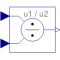

DivisionOutput first input divided by second input |

|
Information
This information is part of the Modelica Standard Library maintained by the Modelica Association.
This block computes the output y by dividing the two inputs u1 and u2:
y = u1 / u2;
Connectors (3)
| u1 |
Type: RealInput Description: Connector of Real input signal 1 |
|
|---|---|---|
| u2 |
Type: RealInput Description: Connector of Real input signal 2 |
|
| y |
Type: RealOutput Description: Connector of Real output signal |
Used in Components (1)
|
Modelica.Blocks.Math Output the total harmonic distortion (THD) |